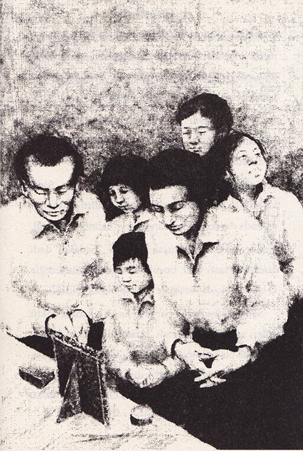

Sadako, sanki koşucu olarak doğmuştu. Annesi bile onun yürümeden önce koşmayı öğrendiğini söylerdi.
1954 yılının bir ağustos sabahı Sadako, giyinir giyinmez dışarıya koştu. Sabah güneşi, koyu renk saçında ışıltılar saçıyordu. Gökyüzü masmaviydi, buluttan eser yoktu. Bu, aslında iyiye işaretti. Sadako, böyle işaretleri hep iyi şansa yorardı.
Eve döndüğünde, kız kardeşiyle iki erkek kardeşini hâlâ mışıl mışıl uyurken buldu. Sadako büyük erkek kardeşi Masahiro’yu dürterek “Kalkın bakalım tembeller,” dedi. “Bugün Barış Günü.”
Masahiro inleyerek esnedi, çünkü mümkün olduğunca çok uyumak isterdi. Ayrıca on dört yaşındaki erkek çocukların çoğu gibi yemek yemeyi de çok seviyordu. Fasulye çorbasının o güzel kokusu burnuna gelince, dayanamayıp kalktı. Mitsue ve Eiji de çok geçmeden uyandılar.
Sadako, Eiji’nin giyinmesine yardım etti. Küçük erkek kardeşi henüz altı yaşındaydı ve çoraplarıyla gömleklerini sık sık kaybederdi. Sonra Sadako yatakları topladı. Dokuz yaşındaki kız kardeşi Mitsue de onları küçük odaya taşımasına yardım etti.
Bu iş de bitince Sadako kasırga gibi mutfağa girip heyecanla, “Anne!” diye seslendi. “Karnavala gitmek için daha fazla bekleyemeyeceğim. Kahvaltıyı bir an önce yapamaz mıyız?”
Annesi o arada pilâv ve çorbanın yanında ikram edeceği turp turşusunu dilimlemekle meşguldü. Sadako’ya sert sert bakarak, “On bir yaşındasın ve bu günün anlamını daha iyi bilmen gerekir,” diye azarladı onu. “Buna karnaval dememelisin. Her yıl ağustos ayının altısında şehrimize atılan atom bombası nedeniyle ölenleri hatırlıyor ve anıyoruz. Bu bir anma günü.”
O sırada Bay Sasaki arka verandadan içeri girerek, “Annen doğru söylüyor Sadako, bugünün anısına saygı göstermelisin. Büyükannen de o korkunç günde ölmüştü,” dedi.
“Ama ben Oba’ya saygı gösteriyorum baba,” diye karşılık verdi Sadako. “Her sabah onun için dua ediyorum. O nedenle bugün çok mutluyum.”
“Dua etme zamanı geldi,” dedi Bay Sasaki.
Sasaki ailesi, mihrabın önünde toplandı. Obanın resmi, oradaki altın çerçevenin içinde duruyordu. Sadako, büyükannesinin ruhu acaba mihrabın üstünde bir yerlerde dolaşıyor mu diye merak edip tavana bakarken, Bay Sasaki, sert bir sesle “Sadako!” diye uyardı onu.
Sadako başını hemen önüne eğdi ve babası konuşurken ayak parmaklarını sinirli sinirli oynatmaya başladı. Bay Sasaki, atalarının ruhlarının mutlu ve huzurlu olması için dua etti. Berber dükkânı ve mükemmel, iyi huylu çocukları için Tanrıya şükretti. Ailesinin atom bombasının neden olduğu lösemiden korunması için de dua etmeyi unutmadı.
Atom bombası Hiroşima’ya dokuz yıl önce atılmış olmasına rağmen, bu hastalık yüzünden birçok kişi ölmüştü, çünkü bomba etrafa radyasyon yaymıştı. İnsanın içinde uzun süre kalan bir çeşit zehirdi bu.
Sadako, kahvaltıda çorbasını ve pilavını büyük bir iştahla bitirdi. Masahiro, kızların aç ejderhalar gibi yemek yediklerini söylediyse de, Sadako oralı olmadı; kardeşinin onu kızdırmasını duymazlıktan geldi. Çünkü aklı başka yerdeydi, kafasında geçen yılki Barış Günü’nün anıları canlanıyordu. Kalabalığı, donanma fişeklerini, müziği çok seviyordu. Ayrıca pamuk helva yemekten hâlâ zevk alıyordu.

Sadako, kahvaltısını herkesten önce yiyip bitirmişti. Yerinden fırlayıp kalktığında masayı neredeyse devirecekti. Yaşına göre boyu uzundu ve uzun bacaklarını hiçbir yere sığdıramıyordu.
“Mitsue, haydi gel de şu tabakları hemen yıkayalım ve bir an önce anma gününe gidebilelim,” dedi Sadako.
Bulaşıklar yıkanıp mutfak tertemiz olunca, Sadako kırmızı fiyonkları örülmüş saçına iliştirip kapının yanında durdu; sabırsızlandığı her halinden belliydi.
Bayan Sasaki yumuşak bir sesle “Sadako!” dedi, “anmaya saat yedi buçuktan önce gitmeyeceğiz. O zamana kadar sessizce oturup beklemelisin.”
Sadako sinirinden pat diye hasırın üstüne çöktü. Ailesi asla acele etmezdi. Hasırın üzerinde otururken cılız bir örümceğin odada dolaştığını gördü. Aslında örümcek uğur getirirdi. Sadako, artık günün çok güzel geçeceğinden emindi. Örümceği dikkatle eline aldı ve dışarıya bıraktı.
“Aptalca bir düşünce bu,” dedi Masahiro. “Örümcekler uğurlu değildir ki.”
Neşeyle gülen Sadako, “Öyle mi sanıyorsun?” dedi. “Bekle de gör!”